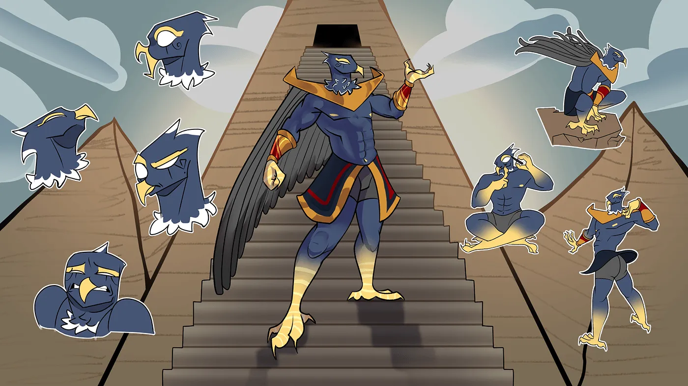
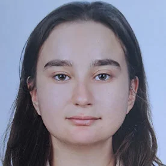
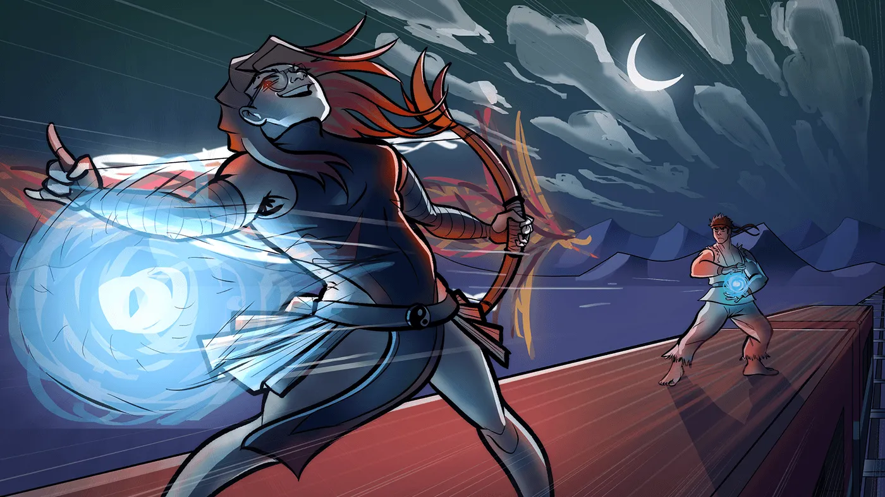
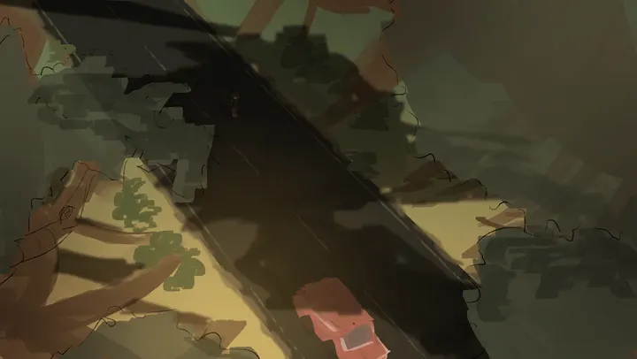
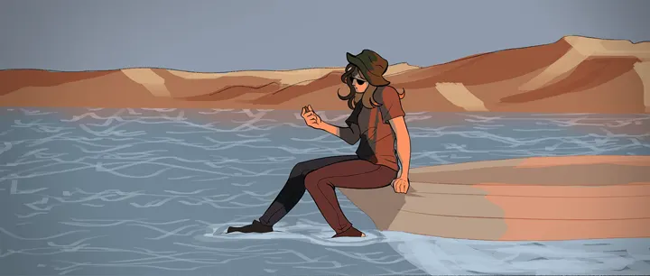
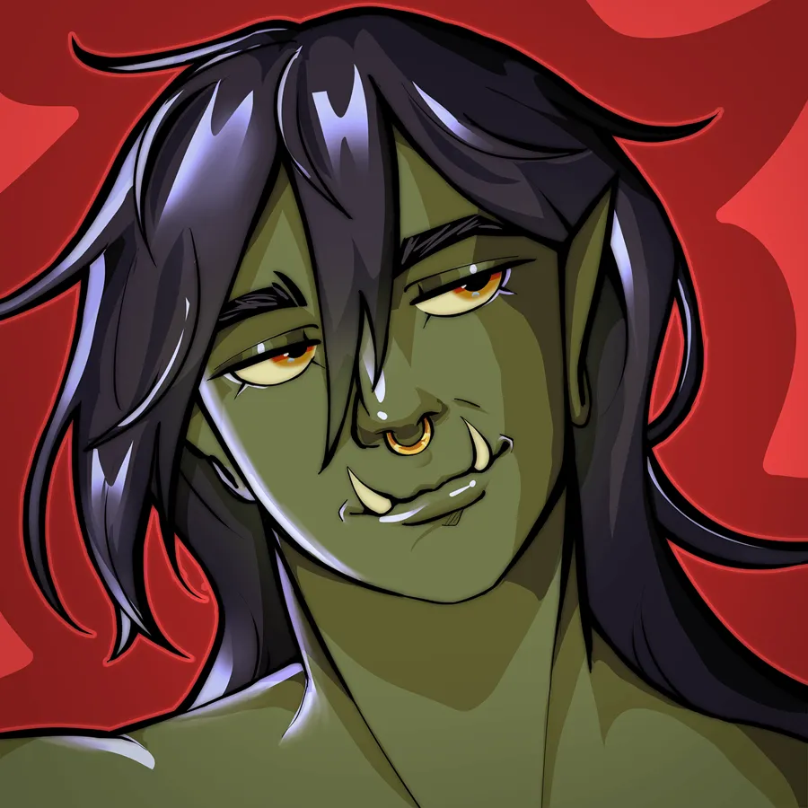

Elif Ecem Gelir Serbest projelere açık · İstanbul

Karakter tasarımı ve dijital illüstrasyon
Bahçeşehir Üniversitesi'nde Çizgi Film ve Animasyon okuyorum. Karakterlerimi Clip Studio Paint EX'te eskizden boyanmış son hâline kadar çiziyorum.
Horus karakter tasarımı
Mısır tanrısı Horus'u bir çizgi film karakteri olarak yeniden çizdim. Ana poz, yüz ifadeleri ve beşer renk denemesi aynı piramit merdiveni sahnesinde duruyor.
- Behance'te
- 28 Kasım 2025
- Alan
- Karakter tasarımı, konsept sanat
Sahne ve renk çalışmaları
Karakter bir sahneye girince ışık ve renk hikâyeyi anlatmaya başlıyor. Gece sahnesi bir kompozisyon çalışması, diğer ikisi film sahneleri için renk panosu.
- Kompozisyon
- 18 Kasım 2025
- Renk panoları
- 17 Kasım 2025



Özgün karakter tasarımı
Bu yeşil tenli savaşçıyı kişisel bir proje olarak tasarladım. Yakın portrede yüzü ve ifadesi, tam boy çizimde kostümü ve duruşu var. Eğitimim ve ekip içinde nasıl çalıştığım Hakkımda sayfasında.
- Behance'te
- 17 Kasım 2025
- Çizimler
- Yakın portre ve tam boy
